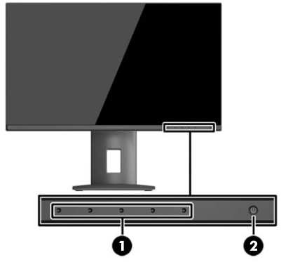
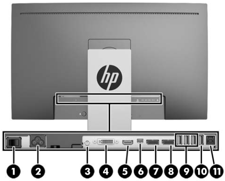

- 00000018WIA3031C330GYZ
- id_168946023.2
- Dec 24, 2024 3:17:25 AM
Calibrate HP HC240 monitor
See the following illustration and table for information on the control locations and functions.
Front panel controls

| Item | Control | Function |
|---|---|---|
| 1 | Menu and function buttons | Use these buttons to navigate through the OSD based on the indicators next to the buttons that are activated while the OSD is open. |
| 2 | Power button | Turns the monitor on or off. Note Make sure the master power switch on the rear of the display is in the ON position to turn on the display. |
Rear components

| Item | Control | Function |
|---|---|---|
| 1 | Master power switch | Turns off all power to the display. Note Putting the switch in the Off position will yield the lowest power state for the display when not in use. |
| 2 | Power connector | Connects the AC power cord to the display. |
| 3 | Audio-out | Connects headphones or an optional HP Speaker Bar to the display. |
| 4 | DVI-D | Connects the DVI-D cable to the display. |
| 5 | HDMI (MHL) | Connects an HDMI or MHL cable from the source device to the display. |
| 6 | Mini-DisplayPort | Connects the Mini-DisplayPort cable from the source device to the display. |
| 7 | DisplayPort IN | Connects the DisplayPort cable from the source device to the display. |
| 8 | DisplayPort OUT | Connects the DisplayPort cable from the primary display to the secondary display. |
| 9 | USB 3.0 standard downstream (3) | Connects optional USB devices to the display. |
| 10 | USB 3.0 downstream fast charge (1) | Connects and charges optional USB battery-powered devices. |
| 11 | USB 3.0 upstream | Connects the USB hub cable from the source device to the display. |
Display options
- Press the Menu button on the front panel of the display to open the On-Screen Display (OSD) menu.
Use the OSD to adjust the display settings screen image based on your preferences. You can access and make adjustments in the OSD using the buttons on the display’s front panel.
To access the OSD and make adjustments, do the following:- If the display is not already on, press the Power button to turn on the display.
- To access the OSD menu, press one of the five front bezel functional buttons (except Power button) to activate the buttons, and then press the Menu button to open the OSD.
- Use the five function buttons to navigate, select, and adjust the menu choices. The button labels are variable depending on the menu or sub-menu that is active.
Table 1. Menu selections in the main menu Main menu Description Luminance Adjusts the brightness level of the screen. Color Control Selects and adjusts the screen color. Input Control Selects the video input signal. Image Control Adjusts the screen image. PIP Control Selects and adjusts the PIP image. Power Control Adjusts the power settings. OSD Control Adjusts the OSD and function button controls. Management Enables/disables DDC/CI support and returns all OSD menu settings to the factory default settings. Language Selects the language in which the OSD menu is displayed. The factory default is English. Information Displays important information about the display. Exit Exits the OSD menu screen. - Navigate to and highlight the Color menu, and then select the DICOM D75 color setting.Note DICOM means Digital Imaging and Communication in Medicine. DICOM color selection will disable Dynamic Contrast Ratio (DCR). Sets the screen colors to Digital Imaging and Communications in Medicine Part 14 compliant standards. White point D75.
- To change the color setting to another preset or custom setting:
- Press the Menu button on the front panel of the display to open the OSD menu.
- Navigate and highlight the Color menu and select the desired color setting.
- Click OK, then click Save and Return.
-
Auto-Sleep mode
- The display supports an OSD option called Auto-Sleep mode that allows you to enable or disable a reduced power state for the display. When Auto-Sleep mode is enabled (enabled by default), the display will enter a reduced power state when the host PC signals Low Power mode (absence of either horizontal or vertical sync signal).
- Upon entering this Reduced Power State Sleep mode, the display screen is blanked, the backlight is turned off and the power LED indicator turns amber. The display draws less than 0.5W of power when in this Reduced Power mode. The display will wake from the Sleep mode when the host PC sends an active signal to the display (for example, if you activate the mouse or keyboard).
Finalization
Do a scan to make sure the system is working properly.